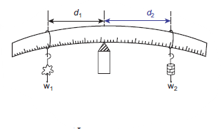

Serial Number. |
Subject |
NAME OF THE EXPERIMENT |
MONTH |
1 |
PHYSICS |
Determination of weight of an object using the principle of moments |
June |
2 |
PHYSICS |
Determination of focal length of a convex lens |
July |
3 |
PHYSICS |
Determination of resistivity |
September |
4 |
CHEMISTRY |
Identification of the dissolution of the given salt whether it is exothermic or endothermic |
June |
5 |
CHEMISTRY |
Testing the solubility of the salt |
July |
6 |
CHEMISTRY |
Testing the water of hydration of salt |
August |
7 |
CHEMISTRY |
Test the given sample for the presence of acid or base |
October |
8 |
BIO-BOTANY |
Photosynthesis-Test tube and Funnel Experiment (Demonstration) |
June |
9 |
BIO-BOTANY |
Parts of a Flower |
August |
10 |
BIO-BOTANY |
Mendel's Monohybrid cross |
August |
11 |
BIO-BOTANY |
Observation of Transverse Section of Dicot stem and Dicot Root |
October |
12 |
BIO-ZOOLOGY |
Observation of Models-Human Heart and Human Brain |
July |
13 |
BIO-ZOOLOGY |
Identification of Blood Cells
|
August |
14 |
BIO-ZOOLOGY |
Identification of Endocrine Glands |
October |
40 minutes for each practical
Aim:
To determine the weight of an object using the principle of moments
Apparatus required:
A metre scale, a knife edge, slotted weights, thread
Procedure:
Observation:
Serial Number |
Weight in the weight hanger W2 (kilogram) |
Distance of known weight d1 (meter) |
Distance of unknown Weight d2 (meter) |
W suffix 2 into d suffix 2 (kilogram meter) |
Unknown weight W suffix1 is equal to w suffix 2 into d suffix 2 divided by d suffix 1 into kilogram |
1 |
|
|
|
|
|
2 |
|
|
|
|
|
3 |
|
|
|
|
|
Mean:
Calculations:
Moment of a force can be calculated using the formula
Moment of the force = Force × distance
Anti clock wise moment by unknown weight = W1 × d1
Clockwise moment by known weight = W2 × d2
W1 × d1= W2 × d2
Unknown weight = W suffix1 is equal to w suffix 2 into d suffix 2 divided by d suffix 1

Result:
Using the principle of moments, the weight of the unknown body W1 = dash kilogram weight.